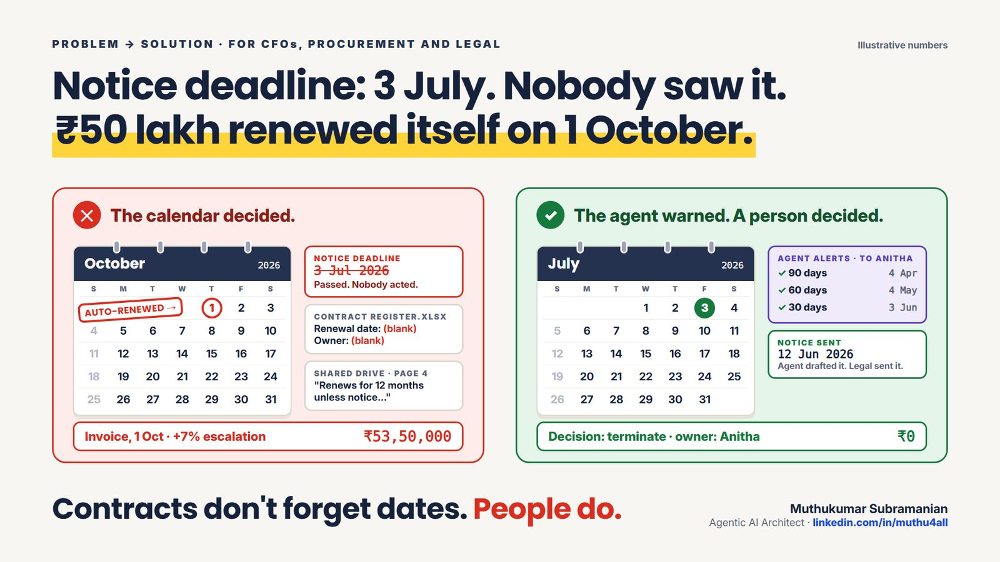
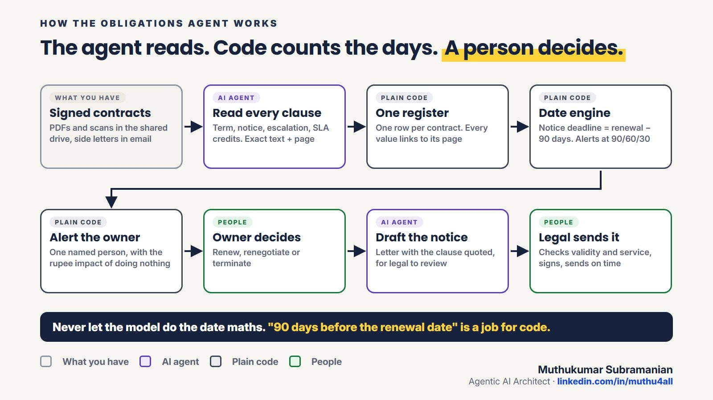
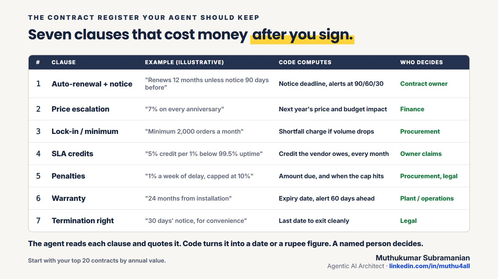

A ₹50 Lakh Contract Renewed Itself Last Month. Your AI Agent Would Have Flagged It.
By Muthukumar Subramanian · Agentic AI Architect

1 October, 10.40 in the morning. The finance head of a packaging manufacturer in Ambattur opens an invoice from their old warehouse-software vendor.
₹50,00,000 for another year of licences and support. Plus a 7% escalation, "as per Clause 11".
They'd moved to a new system in June. Everyone knew the old contract was ending.
Except the contract didn't know that. It renewed automatically for 12 months unless someone sent written notice 90 days before the renewal date. The notice deadline was 3 July. The signed PDF sat in a shared drive folder called Vendor Agreements FINAL. The contract register in Excel had a "renewal date" column. It was blank for this row.
Nobody did anything wrong on 1 October. The mistake happened, quietly, on 3 July. (The company and every number here are illustrative. Ask any procurement head whether the story is.)
The problem: contracts make promises on dates nobody is watching
We spend weeks negotiating a contract. Legal reads every line. The CFO pushes the price down by 4%. Then it's signed, scanned, saved, and nobody opens it again until something goes wrong.
Here's my contrarian view: most contract money isn't lost at the negotiating table. It's lost in the calendar.
The clauses that cost money after signing are boring ones:
→ Auto-renewal and notice periods. Miss the window and you've bought another year.
→ Price escalation. 7% a year, compounding, nobody budgeted for it.
→ Lock-ins and minimum commitments. You pay for volume you never used.
→ SLA credits. The vendor missed uptime three months running and owes you money. Nobody claimed it.
→ Penalties and warranties. The warranty ran out a week before the motor failed.
This isn't a small leak. World Commerce & Contracting's research has put the average value erosion from weak contracting at around 9% of contract value (9.2% in its 2014 study, 8.6% in a later update). On a ₹10 crore contract book, that's the price of a small team, every year.
The legacy system here isn't software. It's a mix: signed PDFs in a shared drive, a register in Excel kept up by whoever has time, and a legal team's calendar that only knows the dates someone typed into it.
The solution: an obligations agent, a register, and a named owner
This is a job today's AI is genuinely good at, because the hard part is reading messy documents, and that's what the models do well. But only if you split the work properly.
→ 1. Read every signed contract. Including scans, amendments and side letters. The agent pulls out the term, renewal type, notice period, escalation, penalties, SLA credits and termination rights, with the clause number and the exact text for each.
→ 2. Fill a register, not a chat. One row per contract, one column per obligation. Every value links back to the page it came from.
→ 3. Let code do the dates. "90 days before the end of the then-current term" becomes a date by plain code, not by the model. Language models are good at reading clauses. They're not reliable at counting days.
→ 4. Alert the owner at 90, 60 and 30 days. To one named person, not a shared inbox. Each alert says what happens if nobody acts, in rupees.
→ 5. Draft the notice. The agent writes the termination or renegotiation letter. Legal reviews it. A person signs and sends it.
The agent reads, extracts and drafts. Code calculates. A person decides: renew, renegotiate or terminate.


In our story, the agent would have read Clause 4 in the first week. The register shows "Auto-renews 1 Oct · notice by 3 Jul · owner: Anitha, Procurement". Alerts land on 4 April, 4 May and 3 June. On 12 June, Anitha decides to terminate, the agent drafts the letter, legal sends it. On 1 October, nothing arrives.
A contract you can't see is a contract that decides for you.
👉 [GIF: B-day17-4-in-article-two-calendars.gif]
Caption: April to October, twice. Without the agent, the notice deadline slips past and the contract renews itself. With the agent, three alerts, one decision, one letter. All details illustrative.
Who makes it work
Not a tool you switch on. Every company's contracts are messier than the demo: three versions of the same agreement, an amendment that lives only in an email, a scanned page with a handwritten "12 months" crossed out.
That's the job of a forward deployed engineer (FDE): an engineer who works inside the customer's team and ships on their real systems. Here, two weeks with legal and procurement, going through the top 50 contracts by value, deciding which clauses matter and who owns each one.
After go-live, someone owns the agent's behaviour: which clauses it tracks, who gets which alert, how early, and what it must never send on its own. Some companies are starting to call that person an AI Agent Manager. The titles are still settling. In an SME it's usually the finance head with two hours a month.
The hard parts
→ Wrong version, wrong date. The agent reads the 2021 draft instead of the signed 2023 copy. Every extracted value must point to the exact clause in the signed document. If it can't, it's a guess. (On Day 17 of my architecture series I wrote about agents citing clauses that don't exist. Same rule here: check the clause is real.)
→ Amendments outside the PDF. "Notice period reduced to 60 days, as agreed on call" in an email thread. The register is only as good as what you feed it.
→ Alert fatigue. 400 contracts, 1,200 alerts a year. Alert on money and deadlines, not on every clause.
→ Confidential documents. Contracts carry prices and margins. Use a company-approved AI workspace, never a free chat window.
→ Some renewals are wanted. The agent shouldn't push you to terminate. It should make sure that renewing is a decision, not an accident.
→ Legal judgement stays legal. Whether a notice is valid, how it must be served, what the clause really means: that's your lawyer's call. I'm not giving legal advice here.
The opportunity
→ For CFOs and procurement heads: list your top 20 contracts by annual value. For each, write the next notice deadline and its owner. If you can't fill that in within an hour, you know what to fix first.
→ For SME owners: your AMC, software, rent, security and transport contracts are enough to start. Ten contracts, one register, one owner.
→ For CA firms and legal-services firms: "contract obligations register" is a service you can sell: read, extract, verify, alert. Fixed price per contract, then a monthly fee.
→ For founders: tools exist, from CLM suites to renewal reminders in Zoho Contracts and DocuSign's AI repository. The gap is mid-size Indian companies with scanned paper, Tamil-English side letters and Excel registers. Build for them.
The contract was always a promise with dates in it. AI can finally read the dates. A person still has to keep the promise.
Your turn 👇
When a contract auto-renews by accident, whose fault is it: the owner's or the process's? Pick one.
Tag the person in your company who'd know, right now, which contract renews next.